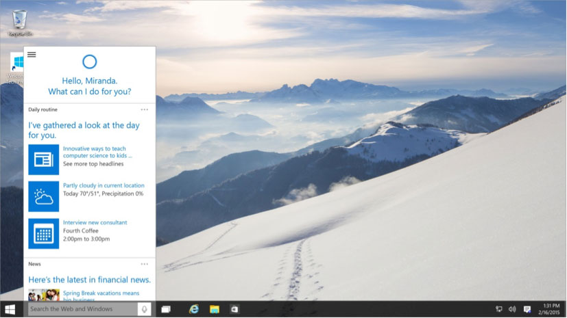
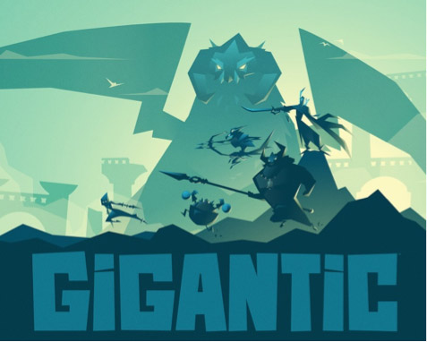
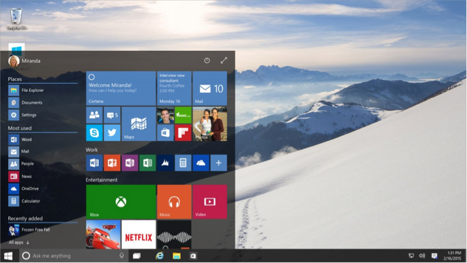

WHAT'S NEW IN WINDOWS 10?
In an announcement June 1 via the official Windows blog, Microsoft revealed that Windows 10 will be available worldwide on July 29, 2015. The release will come after months of user testing of the new OS via the Windows Insider program and, as previously reported, Win 10 will be a free upgrade for many users.
Here's a rundown of some of the big new features coming with Win 10.
Cortana
Cortana, named after the helpful AI in Microsoft's Halo series of video games, is being advertised as "the world's first truly personal digital assistant." With advanced voice recognition, Microsoft is aiming to make Cortana a part of your browsing, scheduling, and digital life wherever you go. With Cortana, you'll be able to type or speak your request or need, and the program will learn your preferences to become even better as time goes on.
Microsoft Edge

Though sadly no longer known by the Halo-inspired codename of "Spartan," Microsoft's newly redesigned Internet browser offers a lot to look forward to for modern web users. Beyond the updated look and name, Edge offers an interesting built-in commenting and note-taking system, which allows users to draw and write directly on a web page and then share their comments with one another. And like practically everything with Windows 10, Edge is built with the Cortana voice recognition and search assistant program naturally integrated, to make it faster and easier to find what you're looking for.
Xbox Integration
Gaming is a big part of the plan for Windows 10, and to support the full Microsoft gaming experience Win 10 will include Xbox-focused features, including an integrated Xbox App. With Xbox Live on Windows 10 PCs, you'll be able to chat with your friends on that network from your PC, whether they're on a PC of their own or an Xbox.
Windows 10 will include a number of features to make social sharing of your games easier, including ways to easily capture, edit, and share your gaming videos. In-home streaming will also be a big part of the new OS, with the ability to stream games from your Xbox One console to your PC or Win 10 tablets. Finally, in the coming months we're looking forward to more information about games like Fable Legends and Gigantic, both of which will allow for cross-platform interaction and play between Xbox and Windows 10 systems.
A Redesigned Interface Across Multiple Devices
With Windows 10, Microsoft looks to be aiming to combine the visual appeal and touch-friendliness of Windows 8 and 8.1 with the power and utility of Windows 7, and they're doing it with a visual redesign that's been positively received by early testers. They've also brought the Start menu back by default, which is sure to please anyone who missed it in Windows 8.
Applications to manage your photos, videos, and other media have been updated and given a consistent look and feel across different devices, and can automatically sync via your OneDrive account. Microsoft Office has gotten a similar upgrade, with individual versions of popular products like Word and PowerPoint all available as separate purchases. Consistency of experience remains a design goal with these applications as well, and they'll all include advanced touch controls on devices which support it.